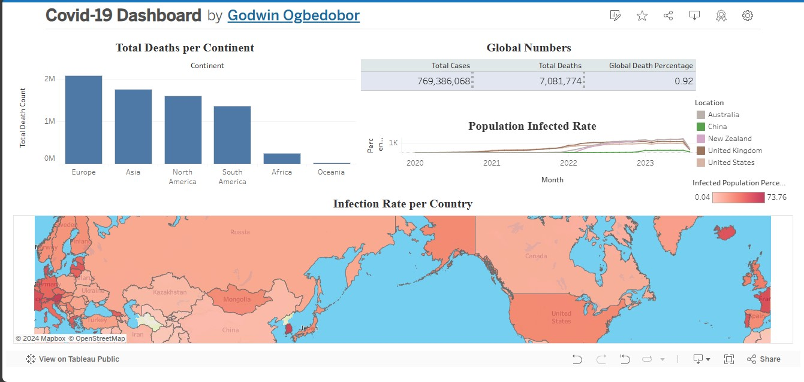

In this project, I utilized SQL to clean and preprocess a complex housing dataset. Key steps included:
Data Validation: Ensured data integrity by identifying and correcting errors.
Handling Missing Values: Employed techniques to manage and impute missing data effectively.
Data Standardization: Unified data formats and structures for consistency.
Final Output: Created a clean dataset ready for analysis, significantly improving data quality and reliability.
This project enhanced my skills in SQL and reinforced the importance of data cleanliness in driving accurate insights.
In this project, I conducted a comprehensive exploration of a COVID-19 dataset using SQL. Key components of the project included:
Data Importation: Efficiently imported large datasets from multiple sources for analysis.
Trend Analysis: Queried data to identify trends in case numbers, recovery rates, and vaccination progress across different regions.
Visualization Preparation: Prepared clean, structured datasets for visualization tools, enabling clearer insights.
Insights and Findings: Extracted meaningful insights that contributed to understanding the pandemic's impact over time.
This project not only honed my SQL skills but also deepened my understanding of data-driven decision-making in public health contexts.
In this project, I focused on cleaning and preprocessing a call center dataset using Jupyter Notebook. Key aspects of the project included:
Data Inspection: Analyzed the dataset to identify inconsistencies and outliers.
Missing Data Management: Implemented strategies to handle missing values and ensure data integrity.
Data Transformation: Standardized formats and types to enhance usability.
Final Dataset Preparation: Produced a cleaned dataset, ready for analysis and visualization.
This project strengthened my skills in data cleaning and manipulation within Python, providing a solid foundation for subsequent analysis.

This COVID-19 dashboard, developed in Tableau, provides a comprehensive visualization of key pandemic metrics. It features global statistics that capture the current state of the virus, alongside detailed breakdowns of total deaths by continent, showcasing the varied impact across regions.
Additionally, the dashboard includes a population infection rate, offering insights into how widely the virus has spread within different communities. The infection rate per country further enables users to compare national responses and outcomes, facilitating a deeper understanding of the pandemic's dynamics.
Designed for clarity and ease of use, this dashboard serves as a vital tool for researchers, policymakers, and the general public to monitor and analyze the ongoing effects of COVID-19. Its interactive elements empower users to explore data trends and draw informed conclusions, contributing to a more informed dialogue around public health strategies.